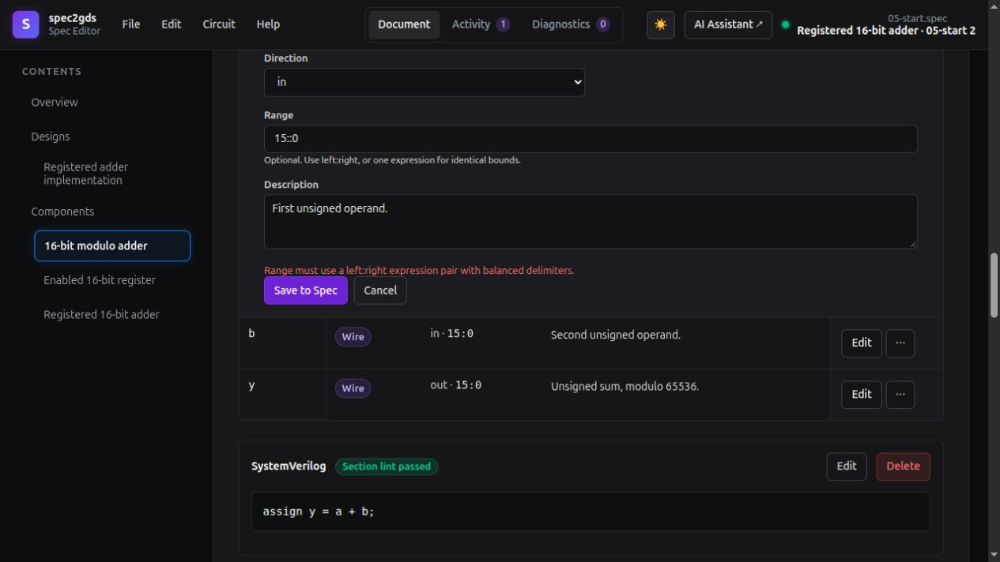

CORE 09 / 09 · 7 MINUTES
Make a change independently
Recover from a rejected draft and confirm a durable change without a click-by-click solution.
Before you start
Spec Editor and the completed registered-adder checkpoint. Circuit Designer is needed for the final comparison.
Actions
- Challenge: improve the adder input
adescription to First unsigned 16-bit operand. Keep its ID, direction, and width. Find the correct Component and edit control yourself. - Before saving, enter the invalid range
15::0. Attempt to save. Read the error. Confirm the draft remains available and that the saved range is still15:0.


- Correct the range to
15:0and save the intended description, or cancel the rejected draft and create a fresh correct edit. Do not change the hardware behavior. - Close the view and reopen the same Spec from its path. Inspect the saved description, adder body, register body, two instances, and seven nets.
- Open the Design in Circuit Designer. Check that the source graph still agrees. Record the final source path and revision. Write down which change you saved and which invalid draft was rejected.

Check your result
The new description persists. All original IDs, widths, implementations, and seven connections remain intact. The invalid range never became saved source.
Try it yourself
Explain to another designer the difference between a private draft, an accepted Spec change, an architecture approval, and a successful lint check.
If it fails
If a different document opens, compare the exact path rather than only its readable name. If you see a stale-source warning, review the current saved source before resubmitting the draft.
Continue
CONTINUEExplore another feature →Reference: spec editor · Complete example